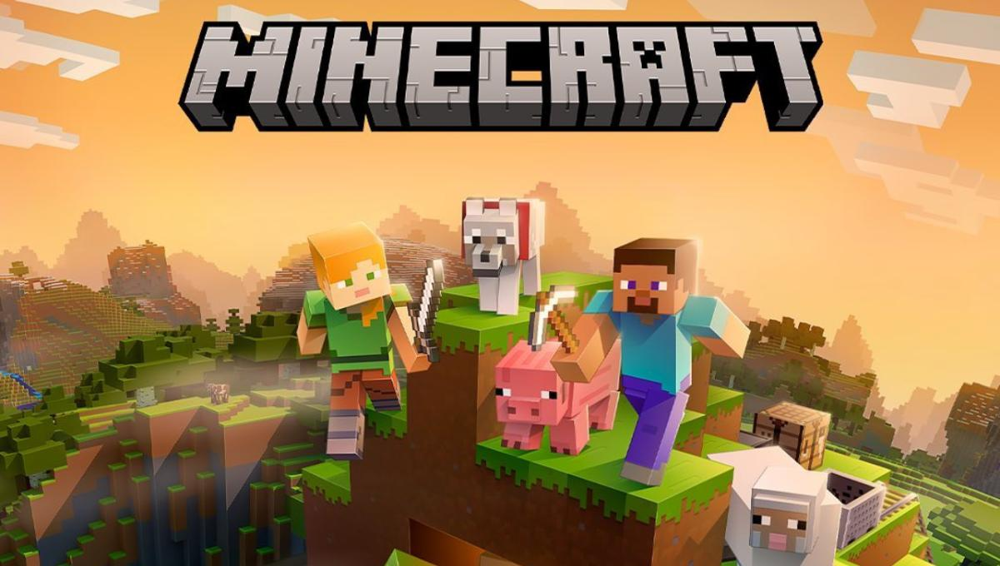
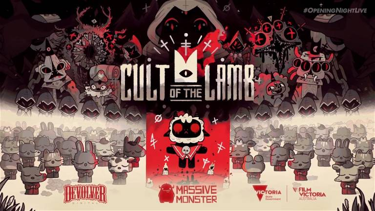
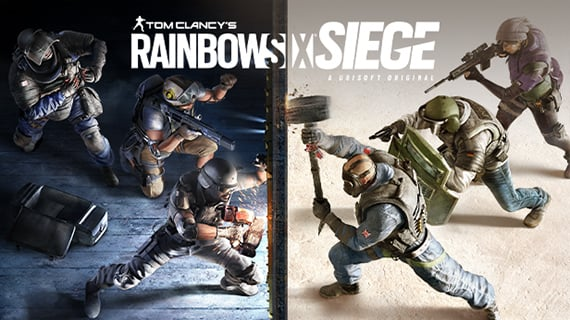
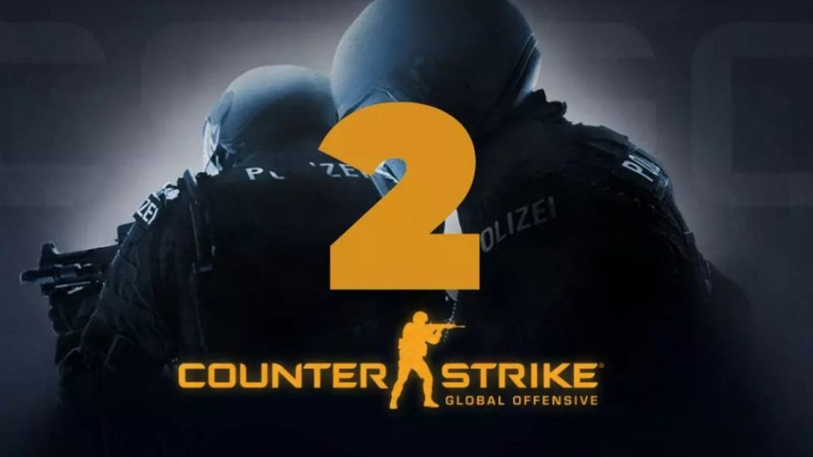
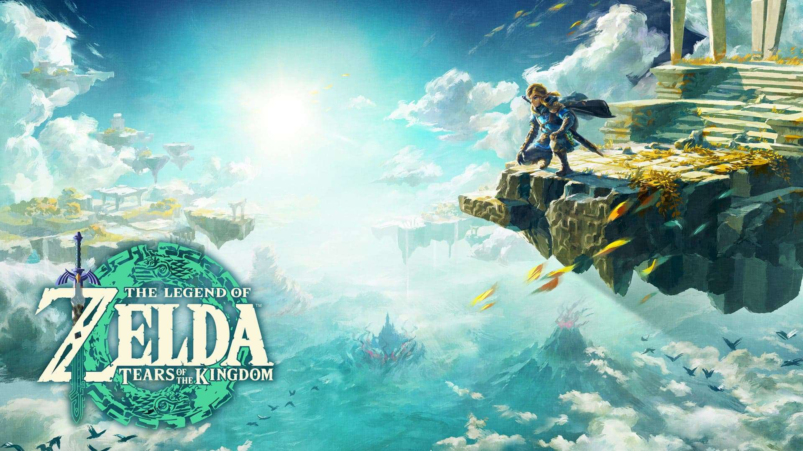

Minecraft es un videojuego tipo sandbox, su traducción literal sería “caja de arena” y es lo que representa la experiencia de juego. Los jugadores pueden modelar el mundo a su gusto, destruir y construir, como si estuviesen jugando en una caja de arena.

Explora cavernas tortuosas, ciudades antiguas y páramos mortales. Combate contra criaturas corrompidas, haz nuevas amistades con extraños insectos y resuelve los antiguos misterios que yacen en el corazón del reino.

Empieza tu propia secta en una tierra de falsos profetas, aventúrate a través de las diversas y misteriosas regiones para construir una comunidad fiel de adeptos del bosque, y difunde tu Palabra para convertir tu secta en la única y verdadera.

El juego consiste en partidas de equipos de cinco atacantes contra cinco defensores. Los defensores deben defender un objetivo dentro de una estructura, ya sea un rehén, dos bombas o un contenedor biológico. Si logran defender al objetivo con éxito o eliminan a todos los atacantes, ganan la ronda.

Los Santos, una extensa metrópolis llena de gurús de autoayuda, aspirantes a estrellas y famosos en decadencia tratando de mantenerse a flote en una era de incertidumbre económica y tele por cable barata. En medio de esta confusión, tres criminales muy distintos lo arriesgan todo en una serie de audaces y peligrosos asaltos que podrían solucionarles la vida.

Es el año 2330 la humanidad ha abandonado la tierra hace cientos de años, el jugador en el papel del Protagonista se embarcara en una aventura a través de los Sistemas Colonizados tras descubrir un extraño objeto en un trabajo de minería recibes contacto de un misterioso grupo llamado Constelación, el ultimo grupo de exploradores espaciales que se embarca mas allá de los sistemas ya explorados, quienes te invitaran a desentrañar el misterio de estos misteriosos artefactos y descubrir: ¿Qué se encuentra mas allá de las estrellas que conocemos?.

Dos equipos compiten en múltiples rondas con un modo de juego enfocado en objetivos con la misión de ganar suficientes rondas para llevarse la victoria.

En su cruzada para reunir los elementos de la Trifuerza, su lucha contra el malvado Ganondorf, o intentando salvar a la sensata princesa Zelda, Link demuestra que es un héroe para la historia. Descubre más sobre sus épicas aventuras aquí.